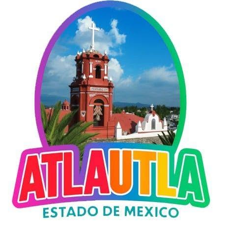
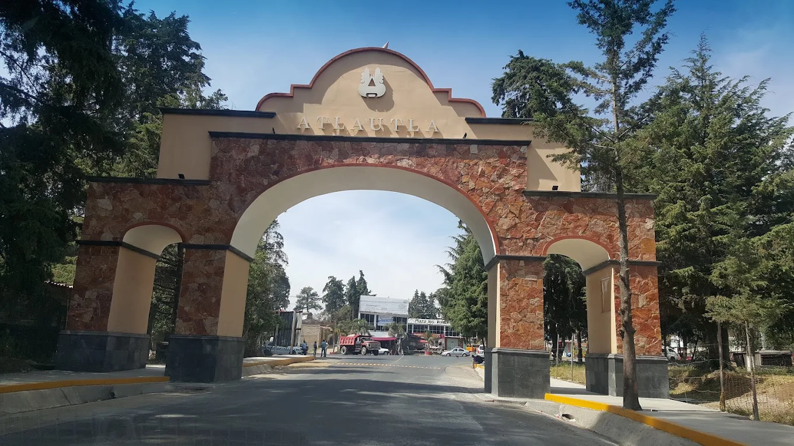
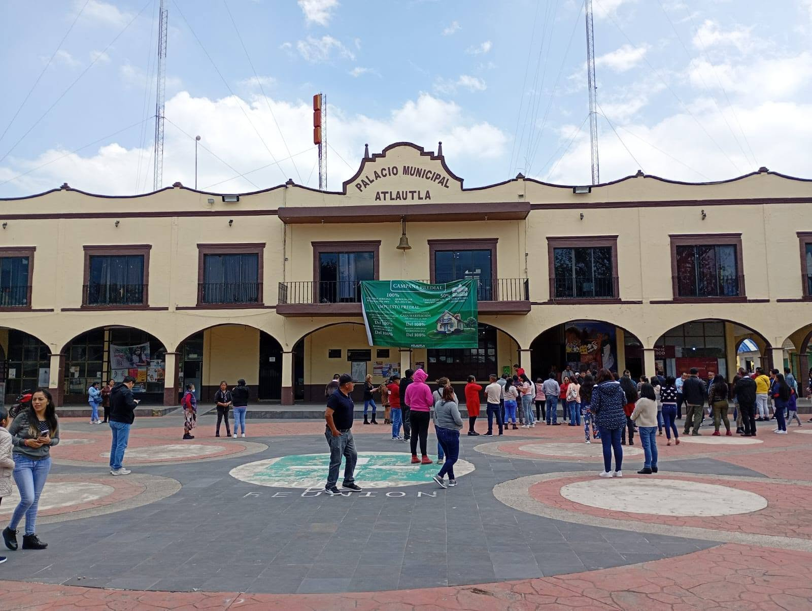

Arquitectura y paisajes que cuentan la historia de Atlautla


Un sueño que avanza con la riqueza natural, cultural e histórica del municipio.
Contar con un legado histórico y cultural relevante: zonas arqueológicas, templos coloniales, fiestas y tradiciones únicas.
Entorno natural privilegiado, como las faldas del Popocatépetl, bosques, barrancas y paisajes que atraen al turismo.
Servicios de hospedaje, gastronomía, guías y señalización que garanticen una experiencia cómoda y segura.
Compromiso de la población y autoridades para preservar el patrimonio, limpieza, seguridad y promoción turística.
Documento rector que incluya diagnóstico, estrategias, metas y acciones para el desarrollo sostenible del municipio.
Eventos, festivales y actividades que rescaten y difundan la identidad atlautina durante todo el año.
Atlautla combina la majestuosidad del Popocatépetl con una riqueza arquitectónica y cultural que lo distingue en el oriente del Estado de México.
Autoridades que trabajan por el desarrollo de Atlautla
El Ayuntamiento inicia funciones el 1 de enero del año siguiente a la elección.
Fuente: Wikipedia / INAFED